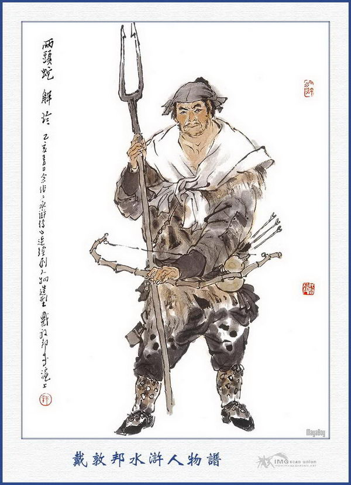
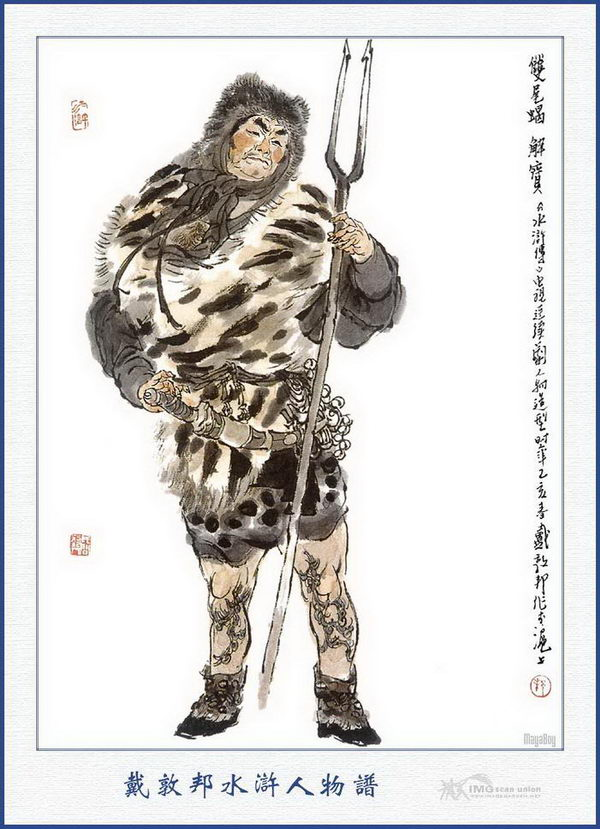
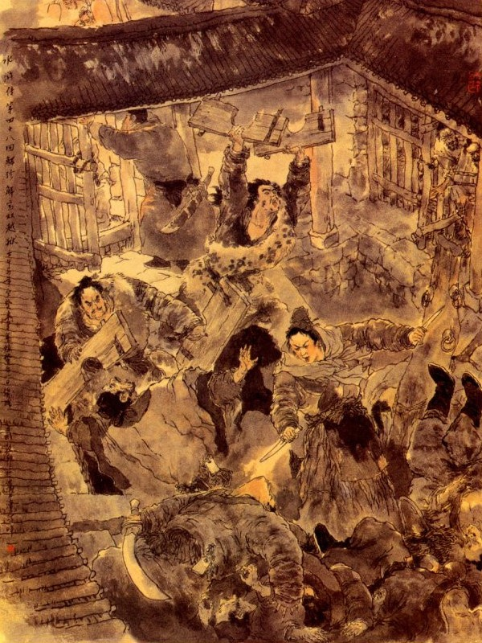
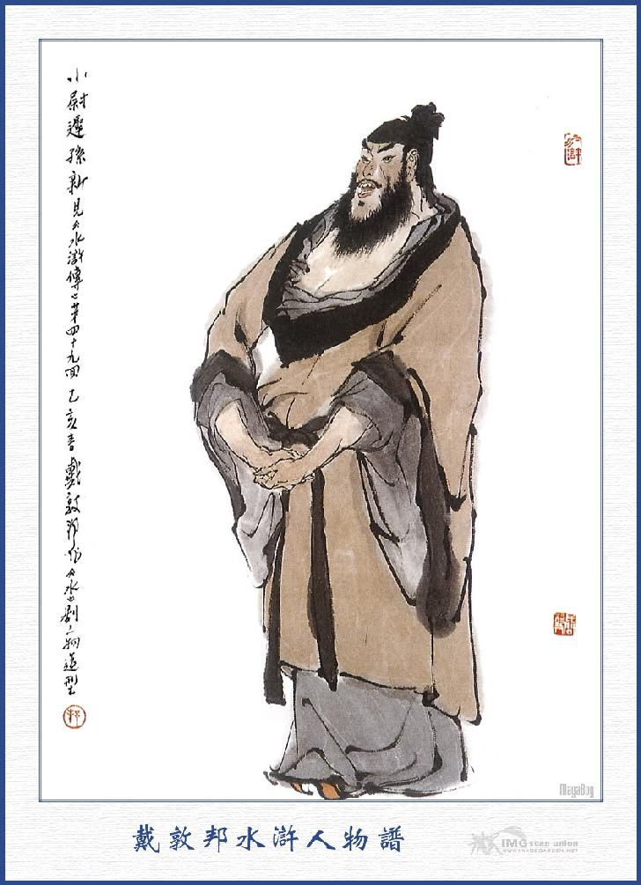
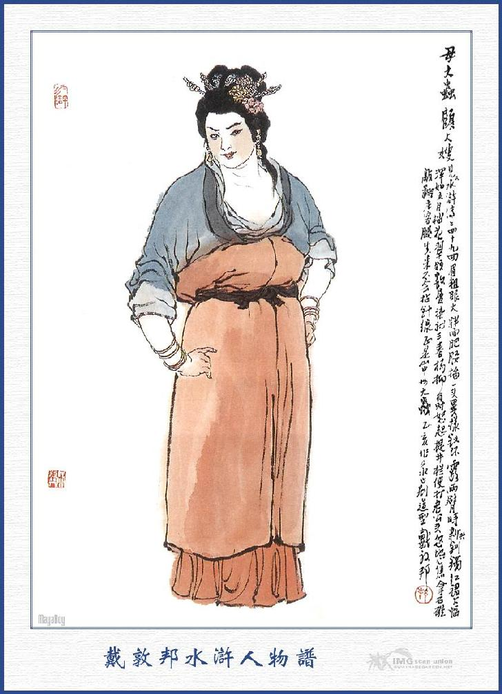
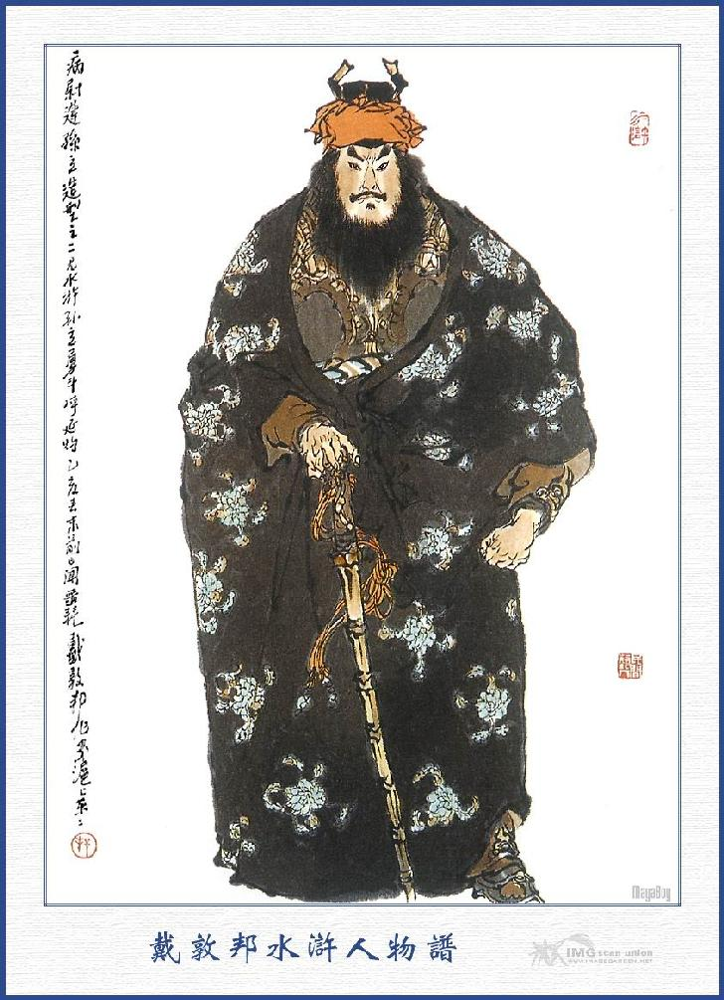
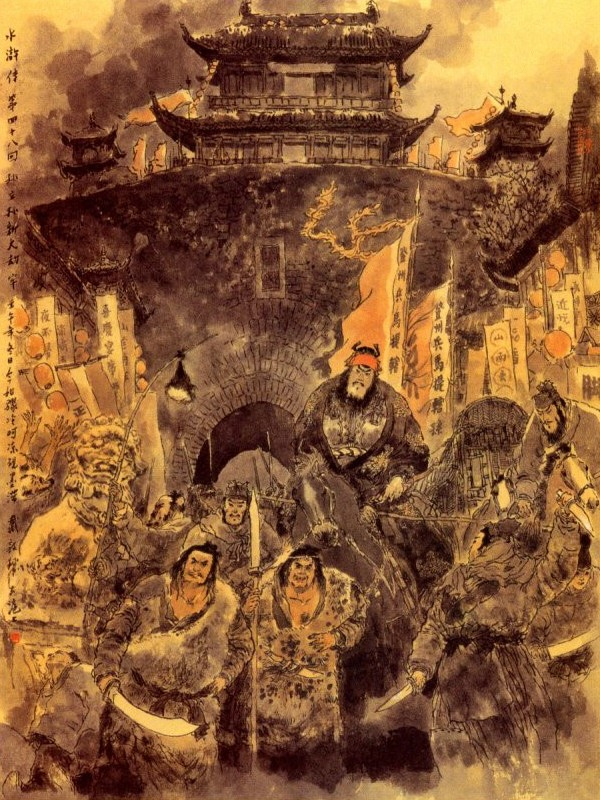

Bấy giờ Ngô Dụng nói với Tống Giang rằng:
- Nay có một cơ hội rất hay là có một người, vì Thạch Tú mà mới đến nhập đảng ở đây. Người ấy rất thân với Loan Đình Ngọc mà lại là anh em chí thân của Dương Hùng, Đặng Phi khi trước. Người ấy thấy nói Ca Ca đánh Chúc Gia Trang bất lợi, nên muốn hiến một kế để làm lễ tiến thân. Ông ta sắp đến đây bây giờ, chỉ trong năm ngày nữa đã có thể thi hành được, Ca Ca cho thế có may không?
Tống Giang nghe nói cả mừng, liền cùng với Quân Sư uống rượu để đợi người kia đến.
Ngoài thành Đăng Châu, về ven Sơn Đông có một tòa núi rất nhiều sài lang hổ báo, thường hay hãm hại nhân gian. Quan Phủ Đăng Châu sức giấy bắt các nhà đi săn ở vùng đó, phải theo lệnh hạn tróc nã các giống thú độc hại người, để trừ hại cho dân. Nếu để sai hạn thì phải xử phạt rất nghiêm. Gần núi đó có hai anh em nhà phường săn, anh là Giải Trân, em là Giải Bảo, đều có võ nghệ hơn người, khiến cây cương xoa hỗn thiết rất giỏi, các phường săn phải tôn làm bậc nhất.
Giải Trân biệt hiệu là Lưỡng Đầu Xà (Rắn hai đầu), Giải Bảo biệt hiệu là Song Vĩ Hạt (Mọt hai đuôi), hai người bố mẹ chết sớm, chưa có vợ con. Người anh mình cao bảy thước, mặt đen tía lưng đỏ, ngực rộng, khỏe mạnh hơn người. Người em cũng mình cao bảy thước, mặt tròn, người đen, hai trái đùi thích hai con Phi Thiên Dọa Xoa, tính rất nóng nẩy, mỗi khi giận dữ điều gì, tưởng chừng như làm long núi đổ trời ngay lập tức.

GIẢI TRÂN

GIẢI BẢO
Khi đó hai anh em vâng giấy lặc hạn của quan rồi cùng nhau về nhà sắp sửa các đồ cung máy tên thuốc, cùng giây móc thùng lùng rồi đội tốt hổ báo vác khí giới đi lên trên núi Đăng Châu bắt cọp.
Hai anh em lên núi, đặt cung máy cẩn thận rồi trèo ngồi trên cây, đợi chực suốt ngày không thấy gì, lại đành phải cùng nhau trở về. Sáng hôm sau lại đem khí giới cơm nắm đi lên núi để chực. Chực đến đầu trống canh năm không thấy tăm hơi gì, hai anh em lại kéo nhau đem cung máy sang núi bên Tây, đợi đón đến sáng cũng không ăn thua gì cả.
Đến ngày thứ ba là ngày hết hạn, hai anh em lại chực mãi đến canh tư, nghe trong người đã mệt nhọc la đà, liền tìm một chỗ tựa nhau ngồi để ngủ. Hai người chưa kịp nhắm mắt thì bỗng thấy tiếng cung bắn ra, liền choàng trở dậy vác gậy móc đi tìm khắp cả mọi nơi; Khi đó có một con cọp bị tên thuốc bắn trúng, đương khua nhẩy ở trên mặt đất, con cọp thấy hai người vác gậy chạy xuống đuổi, liền vùng té để chạy. Hai người lại hết sức đuổi theo. Chạy đến lưng chừng núi, hổ ta bị tên thuốc ngấm, không sao chịu được, bèn kêu lên mấy tiếng rồi dãy lên sùng sục mà nhảy xuống dưới núi.
Giải Bảo thấy vậy nói rằng:
- Được lắm! Ta biết chỗ ấy là đằng sau vườn nhà Mao Thái Công đó, tôi với anh cùng đến đó bắt mới được.
Nói đoạn hai anh em cùng vác gậy đi thốc vào trang viện Mao Thái Công, để gọi cửa. Bấy giờ trời đã gần sáng. Hai người gọi cửa mấy tiếng thì thấy có người báo cho Mao Thái Công chạy ra.
Khi Thái Công ra tới nơi, hai người cùng bỏ gậy xuống chắp tay vái chào rồi nói rằng:
- Kính chào Bá Bá, đã lâu nay chúng tôi không được gặp, hôm nay có chút việc đến phiền Bá Bá, xin người tha lỗi.
Mao Thái Công hỏi rằng:
- Hiền diệt đi đâu sớm quá? Có việc gì thế?
Giải Trân nói:
- Nếu không có việc thì đâu dám làm mất giấc ngủ của Bá Bá. Nay nhân tiểu đệ vâng giấy quan lặc hạn phải đi bắt hổ, chúng cháu chực chõm suốt cả ba ngày, đến sáng hôm nay mới bắn được con hổ, bất đồ lại nhảy vào vườn sau trang đây, vậy xin phép Bá Bá cho chúng cháu vào bắt để đem nộp cho kịp hạn.
Mao Thái Công nói:
- Được, tưởng gì, chú hổ lạc vào đó thì dễ bắt lắm, hai anh hãy vào ngồi chơi trong trang này đã, để bảo trang khách dọn cơm xoàng ăn rồi sẽ bắt cũng được.
Nói đoạn quay ra gọi trang khách dọn cơm rượu lên, mời hai anh em Giải Trân mà ăn uống.
Khi ăn uống xong Giải Trân, Giải Bảo đứng dậy tạ ơn Mao Thái Công mà rằng:
- Xin mời Bá Bá cho người dẫn chúng cháu ra vườn sau một lát.
Mao Thái Công nói:
- Hổ ở vườn đằng sau đây thì còn ngại gì nữa, hai anh hãy ngồi uống nước rồi đi cũng được.
Hai anh em lại phải vâng lời ngồi xuống uống. Uống nước xong, Thái Công liền đứng dậy bảo hai một rằng:
- Bây giờ tôi cũng ra bắt hổ với các anh một thể.
Nói xong dẫn hai người ra san trang rồi gọi trang khách lấy chìa khóa để mở cửa.
Khi đó mở khóa mãi không được, Mao Thái Công nói:
- Vườn này lâu ngày không ai mở đến, chắc là khoả rỉ, cho nên khó mở thế? Lấy cái búa sắt ra đây, dọi gẫy mà mở ra vậy.
Trang khách vâng lời, đem búa dọi tung khóa ra rồi mở cửa cho mấy người vào.
Khi vào tới nơi, tìm khắp cả vườn không thấy đâu, Mao Thái Công bảo với hai người rằng:
- Có lẽ hiền điệt trông lầm, làm gì có hổ vào trong vườn này?
Giải Trân nói:
- Có khi nào lại trông lầm, chúng cháu sinh trưởng ở đất này lại không biết lối hay sao?
Thái Công nói:
- Vậy các anh cứ vào đó mà xem, có thấy thì khiêng về.
Giải Bảo nói với Giải Trân:
- Ca Ca thử lại đây mà xem đám cỏ chỗ này đỏ ẹp cả xuống mà có vết máu ở đây, lẽ nào lại bảo rằng không có hổ? Cái này tất là người nhà ở đây nó bắt mất rồi hẳn?
Mao Thái Công nói:
- Các anh chớ nói thế. Người nhà tôi làm gì biết trong vườn có hổ mà bắt ngay được? Vừa rồi có phải phá khóa ra rồi, tôi cùng với hai anh đi vào đó không? Sao các anh lại hỏi thế?
Giải Trân nói:
- Bá Bá, Bá Bá trả lại chúng tôi con hổ, để tôi đem nộp quan mới được.
Mao Thái Công nói:
- Các anh này mới vô lễ. Tôi mời các anh ăn uống cẩn thận, các anh lại đến bắt đền cọp là nghĩa lý gì?
Giải Bảo nói:
- Không phải là bắt đền, nhưng nay hiện có ông Lý Trưởng chắc cũng có giấy lặn hạn của quan, nhưng ông không bắt được hổ, nhân tiện chúng tôi bắt được đây thì nhận vơ nộp lấy thưởng, để chúng tôi bị phạt đó thôi.
Mao Thái Công nói:
- Các anh bị phạt thì can gì đến chúng tôi?
Hai anh em nhà kia trừng mắt lên nói rằng:
- Ông có thể cho tôi tìm khắp trong nhà không?
Thái Công nói:
- Nhà ta cũng như nhà các ngươi, có trong ngoài ngăn nắp, tìm thế nào được? Hai thằng ăn mày này vô lễ quá?

Giải Bảo chạy thẳng vào trước sảnh tìm không thấy liền nóng máu đánh đập hoang cả lên, Giải Trân cũng bẻ gãy những chắn song ngoài cửa rồi đánh đập ầm ầm lên.
Mao Thái Công kêu lên rằng:
- Giải Trân, Giải Bảo. Hai ngươi đến nhà ta phá cướp ban ngày đấy phải không?
Hai anh đập phá mấy cái bàn, ghế ở trước cửa sảnh rồi thấy trong trang cũng có phòng bị cả, liền cùng nhau lui bước trở ra. Hai người đi vừa mắng ầm lên rằng:
- Lấy con cọp của ta, để xuống quan sẽ liệu.
Đương khi đó chợt thấy ba người cưỡi ngựa, dẫn một bọn đầy tớ theo sau. Giải Trân nhận biết là Mao Trọng Nghĩa, con trai Mao Thái Công đi đó, liền đến gần mà nói rằng:
- Những trang khách trong nhà bác, bắt con hổ của chúng tôi, tôi hỏi mãi mà ông cụ cũng không bảo chúng trả lại, toan đánh cả hai anh em chúng tôi đó.
Mao Trọng Nghĩa nói:
- Tụi người nhà thế có láo không? Chắc là cho tôi cũng bị chúng nó che mắt không biết hẳn? Thôi các anh không nên giận nữa vào đây tôi bảo chúng nó đem trả.
Hai anh em Giải Trân nghe nói đều cảm tạ rồi cùng theo vào trong trang. Khi vào đến cổng, Mao Trọng Nghĩa sai đóng cổng lại rồi quát người nhà hạ thủ.
Đoạn rồi thấy có hai ba mươi trang khách chạy ra còn các người đi theo ngựa lúc nãy thì toàn là lính nhà quan đem đến, đều đổ xô bắt lấy hai người. Giải Trân, Giải Bảo không kịp trở tay, bị chúng áp đến trói ghì ngay lại, không sao mà tháo được.
Bấy giờ Mao Trọng Nghĩa nói rằng:
- Nhà ta đêm qua bắn được con hổ, sao các anh dám đến ăp cướp rồi lại thừa dịp mà lấy cả gia tài và phá phách đồ đạc nữa, như thế thì phỏng đáng tội gì? Để ta giải anh lên Phủ, sẽ trừ cái hại cho dân bản Châu mới được.
Nguyên sáng sớm hôm đó, Mao Trọng Nghĩa vớ được con hổ liền lập tức đem đi giải Phủ rồi đem tụi lính đó về để lập kế bắt Giải Trân, Giải Bảo. Hai anh nọ tình thực không biết là kế, nên lại lớ nhớ quay vào bị họ bắt được, không sao mà gỡ ra cho thoát.
Bấy giờ Mao Thái Công sai đem gậy móc của hai anh và các đồ bị phá gẫy để làm tang vật rồi lột trần cả ra, trói chặt cánh khủyu mà giải lên Phủ. Ở Phủ đó có một người Khổng Mục coi án, tên gọi Vương Chính là con rể Mao Thái Công, đã bẩm nhỏ với Tri Phủ các việc trước rồi. Đến khi giải Giải Trân, Giải Bảo lên tới nha, quan Phủ liền sai vật cổ ra đánh, khép án vào ăn cướp cọp rồi nhân đó cướp cả đồ vật trong nhà mà không cho cãi một câu nào hết cả.
Hai anh em bị đòn đánh khảo quá đau, đành phải chịu nhận các tội rồi Tri Phủ sai lấy gông đóng gông cả lại mà cho giam xuống đại lao.
Bố con Mao Thái Công đắc sách trở về đến trang lại bàn định với nhâu rằng:
- Hai thằng này tất phải kết liễu nó đi, không thể để cho nó sống được.
Bàn xong lại đến Phủ nói với Vương Khổng Mục, liệu kế kết liễu Giải Trân, Giải Bảo và đút lót nói với Tri Phủ cho.
Trong nhà lao ở đó có một người Tiết Cấp đứng đầu là Bao Cát cũng được tiền đút lót của Mao Thái Công và lại có lời ủy thác của Vương Khổng Mục, nên khi mới dong Giải Trân, Giải Bảo xuống, liền ra oai quát lên mà hỏi rằng:
- Hai thằng này có phải là Rắn Hai Đầu, Mọt Hai Đuôi gì đây? Có phải không, gớm cái tên khiếp thực!
Giải Trân nói:
- Chúng tôi ở đây tuy họ gọi xằng như vậy, xong thực chưa từng làm việc gì hãm hại đến lương dân bao giờ?
Tiết Cấp lại quát lên rằng:
- Hai thằng súc sinh này, phen này vào tay ta, ta cho Rắn Hai Đầu hóa ra Rắn Một Đầu, Mọt Hai Đuôi cũng hóa Một Đuôi cho mà coi. Bây mang nó xuống ngục kia.
Tên lính ngục vâng lời, đêm hai người giải xuống ngục rồi nhân khi vắng vẻ hỏi hai người rằng:
- Hai anh có biết tôi không? Tôi tức là em vợ người anh các anh đây.
Giải Trân nói:
- Chúng tôi chỉ có hai anh em, không còn có anh nào nữa?
- Hai các anh là em Tôn Đề Hạt chứ gì?
- Tôn Đề Hạt là anh em con cô con cậu với chúng tôi. Nhưng tôi không được biết ngài bao giờ? Có phải ngài là Nhạc Hòa cữu đó chăng?
- Phải, chính tôi họ Nhạc tên Hòa, người ở Mao Châu, trước tổ tiên chúng tôi đến ở đất này, sau đem chị tôi gả cho Tôn Đề hạt, còn tôi thì coi ngục ở đây. Người ta thấy tôi hát hay, thường gọi là Thiết Khiếu Tử Nhạc Hòa, Tôn Đề Hạt thấy tôi khỏe mạnh, nên cũng dạy cho mấy ngón côn, quyền, dao, kiếm, võ nghệ cũng không kém gì ai?
Nguyên Nhạc Hòa là người thông minh lanh lợi, thuộc hết các ngón âm nhạc, phàm công việc gì nói qua khắc biết, về các môn võ nghệ cũng tinh thông hơn được đôi người, nhân thấy Giải Trân, Giải Bảo là tay hảo hán, nên cũng hết lòng cứu giúp cho. Song ngặt vì thế cô không nổi nên mới phải đem tin tức báo cho hai người biết trước để cùng liệu về sau.
Bấy giờ Nhạc Hòa bảo luôn hai người rằng:
- Tôi nói cho hai bác biết, hiện nay Bao Tiết Cấp nhận tiền đút lót của Mao Thái Công, chỉ định mưu hại các bác đấy, các bác nghĩ sao?
Giải Trân nói:
- Bác không nói đến Tôn Đề Hạt thì thôi, nay bác đã nói tới ông ta thì xin bác làm ơn giúp cho.
- Bác bảo tôi báo tin cho ai?
- Tôi có một người chị họ, ngày trước cha tôi gả cho anh em Tôn Đề Hạt, hiện nay mở hàng cơm ở phố, cách ngoài cửa Đông chừng mười dặm, chị ấy là con gái cô tôi, tên là Mẫu Đại Trùng Cố Đại Tẩu, sức khỏe hai ba mươi người cũng không gần được, chồng chị ta là Tôn Tân, võ nghệ cũng khá mà cũng phải thua chị ta. Chị ấy đối với chúng tôi rất là tử tế. Còn Tôn Tân, Tôn Lập thì mẹ tôi tức là cô các ông ấy, nên đối với chúng tôi là con cô, con cậu cả. Vậy phiền bác làm ơn báo rõ cho chị tôi biết thì thế nào chị tôi cũng có cách để cứu.
Nhạc Hòa nghe nói, liền bảo hai người rằng:
- Nếu vậy các bác cứ khoan tâm, để tôi sẽ liệu ngay.
Nói đoạn lấy bánh nướng cùng cơm thịt đưa cho hai người ăn rồi giả cách kiếm việc khóa nhà lao, giao cho người khác canh, để đi ra nhà Cố Đại Tẩu.
Khi ra tới ngoài mười dặm ở cửa Đông, thấy có một tửu điếm ngoài treo rủng rỉnh thịt dê thịt bò và trong nhà cũng có một bọn đương đánh bác ở đó. Nhạc Hòa chạy vào tửu điếm, thấy có một người đàn bà đương ngồi ở quầy, trong bụng biết hẳn là Cố Đại Tẩu, liền chạy đến trước mặt chào mà hỏi rằng:
- Ở đây có phải là nhà họ Tôn không?
Người đàn bà đáp rằng:
- Phải, ngài định mua rượu, mua thịt, hay là đánh bạc thì vào trong kia.
Nhạc Hòa nói:
- Tôi là Nhạc Hòa, em vợ của Tôn Đề Hạt đây.
Cố Đại Tẩu cười mà rằng:
- Té ra cậu Nhạc Hòa. Trông cậu giống chị Đề Hạt vào tôi lắm. Mời cậu vào chơi trong nhà xơi nước đã.

TÔN TÂN

CỐ ĐẠI TẨU
Nói xong dẫn Nhạc Hòa vào ngồi chơi rồi hỏi:
- Nghe nói cậu làm việc quan trong Phủ, có hai người bị tội mới đến, tôi tuy chưa gặp được bao nhưng cũng nghe tiếng xưa nay, một người tên là Lưỡng Đầu Xà Giải Trân và một người là Lưỡng Vĩ Hạt Giải Bảo. Hai người ấy là anh em nhà tôi cả, bị tội gì mà phải giam vào đó?
- Tôi đến để báo bác biết, nguyên hai bác ấy, bắn được con cọp, nó chạy vào vườn sau nhà mao Thái Công, Mao Thái Công vốn người làng bắt mất, sau lại đổ vạ cho các bác ấy ăn cướp tài sản rồi đem giải đến quan mà đút lót mọi nơi để mà hành tội, họ lại nói với Bao Tiết Cấp chỉ nay mai là kết liễu hai người, nhân thế tôi thấy chuyện bất bình giữa đường mà muốn cứu cho các bác ấy, song một mình tôi khó lòng cứu được mà thân thích cũng chẳng còn có ai. Bởi vậy tôi phải đến đây để báo tin cho các bác ấy, các bác nói rằng: Chỉ trừ ra có Thư Thư là cứu được tính mạng mà thôi, vậy xin Thư Thư nghĩ kế giúp ngay cho?
Cố Đại Tẩu nghe nói thở dài kêu khổ rồi sai người nhà gọi chồng về nói chuyện.
Người chồng là Tôn Tân, em Tôn Lập, người ở Quỳnh Châu, con cháu quan võ nhân đến đóng ở Băng Châu, nên làm nhà ở luôn ngay đó, Tôn Tân người lớn sức khỏe, họn được võ nghệ của người anh, khiến cây giáo trường rất giỏi, người ta thường ví hai anh em như Uất Trì Cung mà gọi Tôn Tân là Tiểu Uất Trì. Bấy giờ Tôn Tân vào tới nơi, chào hỏi Nhạc Hòa rồi Cố Đại Tẩu nói cho Tôn Tân nghe.
Tôn Tân với Nhạc Hòa rằng:
- Nếu vậy cậu hãy cứ về làm ơn trông nom tử tế giúp cho, để vợ chồng tôi liệu cách rồi sẽ nói chuyện sau.
Nhạc Hòa nói:
- Nếu có việc gì dùng được đến tôi, tôi cũng xin hết sức để giúp.
Nói đoạn Cố Đại Tẩu dọn rượu thiết đãi ăn uống rồi lấy ra một ít tiền đưa cho Nhạc Hòa mà nói rằng:
- Phiền cậu đưa vào nhà lao, cho các người canh giam và nhờ họ trông coi cẩn thận giúp cho.
Nhạc Hòa lấy tiền tạ ơn hai người rồi trở về trong lao.
Bấy giờ Cố Đại Tẩu hỏi Tôn Tân rằng:
- Nhị Ca có kế gì cứu được hai người anh em tôi đó chăng?
- Thằng Mao Thái Công nó có tiền, có thế, song nó sợ anh em này hay lôi thôi sinh sự, nên nó muốn kết liễu cho xong. Cứ như thế thì trừ phi cướp lao, còn không thể có kế nào mà cứu thoát được nữa.
- Hay đêm nay ta làm nay?
- Chết nỗi! Sao to gan thế? Phải cẩn thận mới được, cướp lao xong rồi thế nào chứ? Việc này nếu không có Ca Ca cùng hai anh kia thì không xong mất.
- Hai anh nào?
- Hai chú cháu anh con bác là Trâu Uyên, Trâu Nhuận, hiện nay ăn cướp ở núi Đăng Vân, đối với tôi rất tử tế và thân thiết. Nếu được hai tay ấy giúp vào thì tất là xong việc.
- Đăng Vân Sơn với đây cũng gần, đêm nay đi tìm ngay mới được.
- Tôi đi ngay bây giờ, nàng phải sắp sẵn cơm rượu ở nhà đó, thế nào tôi cũng mời được họ về đây.
Cố Đại Tẩu vâng lời, bèn sai người nhà mua sắm thêm các đồ hoa quả và giết thêm một con lợn để đó.
Chiều hôm đó Tôn Tân dẫn hai người hảo hán về, một người chú kia là Trâu Uyên quê ở Lai Châu, vốn tay nhàn hàn xuất thân, tính người thẳng thắn trung lương mà hay đánh bạc; võ nghệ giỏi, tính cương ngạnh không chịu dung người, đám giang hồ thường gọi là Xuất Lâm Long. Một người cháu tên là Trâu Nhuận, sấp sỉ cũng bằng gần tuổi chú, cao lớn cũng hơi giống nhau, duy có tướng lạ là ở đằng sau ót có cái bứu lồi lên, hễ khi nào cãi cọ với ai, tính nóng lên thì giơ bướu húc vào người ta; có hôm gãy cả cây thông ở bên khe núi, ai nom thấy cũng phải kinh lạ, nhân thế người ta thường gọi là Độc Giốc Long.
Bấy giờ Tôn Tân dẫn hai người đến nơi. Cố Đại Tẩu mời cả vào nhà trong ngồi chơi rồi đem câu chuyện nói với hai người và cùng nhau bàn chuyện mà cướp lao.
Trâu Uyên nói:
- Tôi có tám chín mươi người thủ hạ, được hai mươi tên là tâm phúc rất thân, ngày mai làm xong việc này, nếu không ở đây yên thì ta đã có chỗ kia cũng nương thân được. Chỗ này tôi định đi đã lâu, nhưng không biết hai vợ chồng bác có bằng lòng đến đó không?
Cố Đại Tẩu nói:
- Tha hồ muốn đi đâu chúng tôi cũng theo dược. Chỉ làm sao cứu cho anh em tôi đã.
Trâu Uyên nói:
- Hiện nay Lương Sơn Bạc rất là hưng thịnh, Tống Công Minh hết lòng nạp sĩ chiêu hiền mà thủ hạ ở đó lại có ba người rất thân với tôi: Một người là Bảo tử Đầu Lâm Xung, một người là Hoả Nhỡn Toan nghê Đặng Phi và một người là Thạch Tướng Quân Thạch Dũng, đều đến đó vào đảng đã lâu. Nay cứu được hai người ấy ra thì ta kéo nhau cả lên Lương Sơn Bạc có được không?
Cố Đại Tẩu nói:
- Cái đó rất hay, nếu ai không đi thì ta giết chết ngay, còn để làm gì?
Trâu Nhuận nói:
- Còn có điều này nữa: Khi ta cướp lao cứu được người ra mà Đăng Châu cho quân đi đuổi thì bấy giờ làm thế nào?
ố Đại Tẩu nói:
- Anh ruột nhà tôi, hiện làm Đề Hạt coi binh mã ở đây, khắp đất Đăng Châu còn ai hơn được. Mấy phen đám giặc cỏ đến thành, đều là ông ta đánh được, quanh đây ai không nghe tiếng. Ngày mau tôi sẽ mời đến đây, nói với ông ta bằng lòng là xong.
Trâu Uyên nói:
- Chỉ sợ ông ta không bằng lòng đi lạc thảo.
Tôn Tân nói:
- Được rồi tôi đã có cách.
Nói đoạn cùng chè chén với nhau, đến canh khuya mới nghỉ.
Sáng hôm sau Tôn Tân sai người nhà, đem một cỗ xe vào trong dinh, mời vợ chồng Tôn Đề Hạt đi ra nói dối rằng Cố Đại Tẩu ở nhà ốm nặng, mời ra để trông nom giúp.
Cố Đại Tẩu dặn rằng:
- Vào đó nên nói là ta bị ốm rất nguy, có mấy lời chí thiết, mong gặp mặt anh chị để dặn dò, xin đến lập tức ngay cho.
Tụi người nhà vâng lời, đánh xe vào thành để đón. Khi cơm nước xong đã thấy xe Nhạc Đại Nương ngựa Tôn Đề Hạt và mười mấy tên lính theo hầu đi đến. Tôn Đề Hạt liền vội vàng bảo cho Cố Đại Tẩu biết, Cố Đại Tẩu liền dặn kế như thế mà thi hành.
Đoạn rồi Tôn Tân chạy ra đón tiếp Nhạc Đại Nương và Tôn Đề Hạt vào.

TÔN LẬP
Tôn Đề Hạt tên là Tôn Lập, biệt hiệu là Bệnh Uất Trì, mình cao tám thước, bắn được cung cứng, cưỡi nổi ngựa hay, tài khiến cây gươm trường, tay đeo một cái Kim Chiên (Roi sắt), gióng trúc mặt hổ, bọn giặc bể xưa nay, thấy bóng là phải lánh xa kinh sợ.
Bấy giờ Tôn Lập bước vào trong cửa, liền hỏi Tôn Tân:
- Em ơi! Thím nó bị đau thế nào?
Tôn Tân đáp:
- Nhà em bị đau rất nguy hiểm, xin Ca Ca vào trong nhà sẽ thưa chuyện.
Nghe đoạn Tôn Lập đi vào nhà trong, Tôn Tân sai người nhà mời đám quân hầu sang hàng rượu bên trước cửa thiết rượu và bảo người nhà dắt ngựa vào một chỗ.
Vợ chồng Tôn Lập vào trong nhà ngồi một lát rồi Tôn Tân nói:
- Xin mời anh chị vào phòng thăm bệnh xem.
Vợ chồng Tôn Lập đi vào trong phòng, không thấy có ai ở đó.
- Nào thím ấy đâu, nằm ở phòng nào?
Vừa hỏi dứt lời thì Cố Đại Tẩu chạy vào, lại có Trâu Uyên, Trâu Nhuận theo sau.
Tôn Lập hỏi:
- Thím đau bệnh gì thế?
Cố Đại Tẩu nói:
- Chào anh chị, em mắc về bệnh phải cứu anh em đây?
- Quái lạ! Cứu anh em nào?
- Xin bác đừng nên giả điếc. Bác ở trong thành lại không biết chuyện hai người đó hay sao? Dễ hắn là anh em với tôi, không phải là anh em với bác hẳn?
- Tôi không biết chuyện gì cả, hai người nào?
- Bác ơi! Nay sự đã cấp bách đến nơi, tôi xin thực bác nghe: Hai anh Giải Trân, Giải Bảo, bị lão Mao Thái Công ở làng cùng anh Vương Khổng Mục ở Phủ này, bầy mưu hãm hại toan giết cả hai người. Nay em đã bàn với hai tay hảo hán đây, định vào trong Phủ cướp lao để cứu hai anh em mà đi lên Lương Sơn Bạc cả. Song sợ công việc sau này phát ra, tất là phải lụy đến bác, bởi vậy em phải nói dối là bị yếu, để mời hai bác ra đây bàn đinh một thể, nếu các bác không chịu đi thì chúng tôi cũng cứ lên Lương Sơn Bạc, bấy giờ không biết đó là đâu, tất nhiên họ cứ bắt những người nhà mà giam chấp đã rồi khi đó lấy ai nuôi nấng khiếu oan cho các bác, chẳng hay các bác nghĩ sao?
Tôn Lập nói:
- Ta là một người quan võ ở đất Đăng Châu, lẽ nào làm việc ấy được.
Cố Đại Tẩu nói:
- Bác đã không bằng lòng thì hôm nay quyết đấu với bác một sống một chết cho xong.
Nói đoạn rút đoản đao ra tay. Nhạc Nương thấy vậy ngây người ra, không biết nói làm sao được cả.
Tôn Lập vội kêu lên rằng:
- Thím hãy thong thả làm chi mà nóng nảy thế? Để tôi bàn định làm sao cho ổn rồi sẽ hay.
Cố Đại Tẩu nói:
- Bác có định thì xin đưa bác gái đi ngay lập tức rồi chúng tôi sẽ hạ thủ ngay.
- Đã đành rằng đi, nhưng cũng phải về qua thu xếp hành lý rồi xem thế nào thì mới làm được chứ.
Cố Đại Tẩu nói:
- Nhạc Cữu trong đó đã đưa tin cho tôi rồi, nếu thuận thì một đằng cứ cướp lao, một đằng thu xếp hành lý cũng được, không chậm gì?
Tôn Lập nghe nói thở dài một tiếng mà nói:
- Các người đã định làm như thế, ta còn từ chối làm sao cho được? Nếu ở lại đây thì chẳng qua sau này chỉ chịu tội thay cho các người ở trước mặt Quan Tư mà thôi?
Đoạn rồi cùng nhau tụ ở đó để bàn định hành sự, trước hết cho Trâu Uyên về trại Đăng Vân Sơn, thu lấy của cải ngựa xe, cùng đem cả hai mươi tên tâm phúc đến đó rồi sai Tôn Tân vào thành, để tìm Nhạc Hòa dò đea tin tức ước hẹn để làm và nói cho Giải Trân, Giải Bảo cùng biết.
Ngày hôm sau Trâu Uyên thu xếp tài vật kim ngân rồi dẫn hai mươi người đến tửu điếm để hội họp. Trong nhà Tôn Tân có bảy tám tên người nhà tâm phúc và mười mấy tên lính hầu của Tôn Lập, cộng tất cả bốn mươi người ở đó. Tôn Tân sai giết một con dê, con lợn ăn uống no say rồi Cố Đại Tẩu giắt dao lưng ăn mặc giả mụ đàn bà đưa cơm tù đi vào trước, Tôn Tân theo Tôn Lập đi sau. Trâu Uyên, Trâu Nhuận chia đám người nhà làm hai đường đi sau rốt, cùng nhau kéo tới lao thành.
Hôm ấy Nhạc Hòa đương vác gậy đứng canh ở cửa lao, bỗng thấy tiếng chuông gọi giật lên, liền hỏi rằng:
- Ai đó?
Cố Đại Tẩu đáp rằng:
- Tôi là người đàn bà đưa cơm tù đến đây.
Nhạc Hòa nghe nói, liền mở cửa cho Cố Đại Tẩu đi vào rồi đóng cửa lại mà toan xuống nhà dưới. Bấy giờ Bao Tiết Cấp đứng ở sân, trông thấy liền hỏi:
- Người đàn bà nào đưa cơm vào lao kia? Không được vào đó mà thông tin tức với nhau.
Nhạc Hòa nói:
- Đó là chị Giải Trân, Giải Bảo đưa cơm nước vào cho hắn.
Bao Tiết Cấp lại quát:
- Không cho nó vào được, các anh phải cầm lấy mà đưa vào.
Nhạc Hòa bèn đỡ lấy cơm, mở cửa ngục đưa cho Giải Trân, Giải Bảo.
Nhạc Hòa nói:
- Chị các bác đã vào đấy chỉ còn đợi trước sau tiếp ứng là hạ thủ thôi.
Nói đoạn liền tháo cùm ra cho Giải Trân, Giải Bảo.
Chợt thấy tên lính báo rằng:
- Có Tôn Đề Hạt gọi cửa toan đi vào đây.
Bao Tiết Cấp nói:
- Ông ấy làm quan binh vào đây có việc gì? Không mở cửa được.
Khi đó Cố Đại Tẩu đi mon men dưới sân rồi lại thấy phía ngoài Tôn Đề Hạt gõ cửa rất hăng. Bao Tiết Cấp tức giận toan đi trở ra.
Cố Đại Tẩu liền quát lên một tiếng:
- Anh em ta ở đâu?
Đoạn rồi rút hai sao sáng loáng ra tay. Bao Tiết Cấp thấy sự thể nguy bách, liền ù té để chạy.
Bên kia Giải Trân, Giải Bảo ở trong lao nhảy ra, vừa gặp Bao Tiết Cấp chạy đến đó, liền vác gông đánh cho mấy cái, vỡ óc nằm quay ra đất.
Cố Đại Tẩu xông pha vác dao giết luôn bốn năm tên lính canh ngục rồi cùng nhau reo hò mà đánh phá trong lao ra. Tôn Lập, Tôn Tân đứng coi ở trước cửa lao, thấy có bốn người trong lao chui ra rồi, theo lối Phủ mà chạy mất. Bấy giờ Trâu Uyên, Trâu Nhuận chém được đầu Vương Khổng Mục mà xách cả ra đó rồi cùng nhau hò hét ầm ầm lên mà kéo đi. Bọn đi bộ kéo trước rồi đến Tôn Đề Hạt cưỡi ngựa cầm cung tên đàn áp đi sau. Phố sá hai bên đều đóng cửa, không ai dám thò mặt ra phố. Bọn lính Phủ ở đấy, trông thấy Tôn Đề Hạt, không ai dám đến gần mà ngăn trở đường đi.
Khi kéo nhau về đến tửu điếm ngoài thành, bèn mời Nhạc Đại Vương lên xe. Cố Đại Tẩu lên ngựa, để cùng dong ruổi lên đường.
Giải Trân, Giải Bảo nói với mọi người rằng:
- Còn nhà lão Mao Thái Công nếu không giết được cũng không hả lòng. Nhân tiện ta trừ thẳng giặc gia đi một thể.
Tôn Lập nói:
- Phải lắm, Tôn Tân với Nhạc Hòa đưa xe với người đi trước chúng tôi sẽ theo sau.
Tôn Tân, Nhạc Hòa vâng lời đưa xe cộ đi trước rồi Tôn Lập dẫn Giải Trân, Giải Bảo, Trâu Uyên, Trâu Nhuận cùng bọn người nhà thẳng đến trang viện Mao Thái Công. Bấy giờ Mao Thái Công đương cùng với Mao Trọng Nghĩa uống rượu thọ ở trang, không biết đâu mà phòng bị, các hảo hán ở đâu liền ồ át kéo đến, chém giết hai người và giết sạch cả nhà, không tha ai cả. Đoạn rồi lục lấy các đồ kim ngân tài vật dắt lâu bảy tám cỗ ngựa ở sau nhà, chọn lấy ít quần áo tốt cho Giải Trân, Giải Bảo mặc rồi đốt trang viện mà cùng nhau lên ngựa ra đi.

Thế gian cầm lửa đốt người,
Biết đâu lửa cháy hại rồi đến thân,
Những phường gian ác tiểu nhân,
Trông gương trước đó liệu thân mà chừa!
Hay chi gian xảo lọc lừa,
Xưa nay quân tử bao giờ giết oan!
Bọn Tôn Lập kéo đi được ba mươi dặm đường thì gặp lũ Tôn Tân đưa xe cộ đến đó, bèn cùng nhau nhập vào một bọn mà đi lên Lương Sơn Bạc. Trong khi đi đường, lại cướp thêm được bốn năm con ngựa rất tốt, ai nấy đều có vẻ sung sướng vô hạn.
Khi tới Lương Sơn Bạc, kéo nhau vào hàng rượu Thạch Dũng, Trâu Uyên chào hỏi chuyện trò rồi hỏi thăm đến Dương Lâm cùng Đặng Phi, hiện nay có ở trong trại không?
Thạch Dũng nói:
- Hai người đều theo Tống Công Minh đi đánh Chúc Gia Trang, hai lần tiến binh đều thất lợi cả. Mới nay xó tin báo Dương Lâm Đặng Phi bị bắt cả, không biết sự thể ra sao? Trong thôn Chúc Gia Trang có ba người rất giỏi, lại có giáo sư Loan Đình Ngọc phụ giúp, cho nên cả hai lần cùng vào đánh mà không sao phá được.
Tôn Lập nghe nói cười rằng:
- Chúng tôi đến đây nhập đảng, chưa có gì là chút công lao, vậy xin hiến kế phá Chúc Gia Trang, để làm lễ tiến thân phỏng có được chăng?
Thạch Dũng cả mừng mà rằng:
- Ngài có kế sách gì, xin cho được biết?
Tôn Lập nói:
- Loan Đình Ngọc với tôi cùng học một thầy, võ nghệ của tôi ông ta đã biết mà tài giỏi ông ta tôi đây đã biết. Vậy ngày nay tôi giả làm quân mã Đăng Châu, kéo sang coi giữ Vạn Châu, đi qua đó vào trong trang mà hẹn nhau giáp đánh trong ngoài thì tất phải phá được. Kế đó các ngài nghĩ sao?
Thạch Dũng chưa kịp trả lời thì thấy tiểu lâu la vào báo rằng:
- Có Ngô Học Cứu quân sư xuống núi, đi đến Chúc Gia Trang để cứu ứng bây giờ.
Thạch Dũng nghe nói, bảo tiểu lâu la bẩm quân sư vào hàng tiếp kiến rồi sẽ đi. Được một lát đã thấy ba anh em họ Nguyễn, cùng Lã Phương, Quách Thịnh dẫn quân mã đi đến trước cửa điếm rồi thấy quân sư Ngô Dụng dẫn năm trăm quân mã đến sau. Thạch Dũng đón vào trong điếm, dẫn đám Tôn Lập ra chào và đem tinh ý nói cho Ngô Dụng biết.
Ngô Dụng nghe nói cả mừng mà rằng:
- Các vị hảo hán đã có lòng như thế thì xin lập tức tới Chúc Gia Trang làm xong việc rồi sau sẽ về sơn trại được chăng?
Tôn Lập cùng mọi người vui lòng câng thuận cả.
Ngô Dụng liền nói:
- Vậy thì tôi xin dẫn nhân mã đi trước rồi các ngài sẽ nối gót đi ngay mới được.
Nói đoạn liền dẫn nhân mã đi đến trại Trung Quân thuật truyện cho Tống Giang nghe.
Bấy giờ Tống Giang nghe rõ đầu đuôi thì hớn hở vui mừng, bèn sai quân sĩ bày tiệc trong trại để đợi.
Khi ấy Tôn Lập thấy Ngô Dụng đi trước, liền đem xe trượng cùng các người theo hầu cho nghỉ một nơi rồi dẫn Giải Trân, Giải Bảo, Trâu Uyên, Trâu Nhuận, Tôn Tân, Cố Đại Tẩu, cùng Nhạc Hòa, cộng tất cả tám người, cùng đến sơn trại ở gần thôn Chúc Gia Trang để bái yết Tống Giang. Tống Giang tiếp chuyện cả mừng, liền thiết đãi ăn uống rất là vui vẻ.
Ngô Dụng liền truyền lệnh cho mọi người, ngày thứ ba thì làm như thế, như thế, đến ngày thứ năm thì làm như thế, như thế.
Bọn Tôn Lập cùng mọi người đều lĩnh mệnh rồi cùng nhau sắp sửa đến Chúc Gia Trang, để thi hành kế sách.
Ngô Dụng lại gọi Đới Tung đến mà bảo rằng:
- Viện Trưởng khá về sơn trại gọi cho tôi bốn vị Đầu Lĩnh xuống đây, có việc cần, tất phải dụng đến mới được.
Đới Tung vâng lời rồi bẩm với quân sư, để hỏi bốn vị Đầu Lĩnh ấy là ai?
Đời không hiếm kẻ anh tài,
Có chăng hiếm kẻ biết tài mà thôi,
Mấy ai con mắt tinh đời?
Dùng người phải biết dụng người mới ngoan,
Trong tay cầm vững cơ quan,
Việc đời vạn sự thiên đoan coi thường,
Trò đời đương lúc nhiễu nhương,
Có ai biết Ngọa Long Cương lúc này.
Lời bàn của Thánh Thán
Sau khi tả muôn quân ngàn ngựa, chợt đâu có đoạn văn tả sự sóng nổi đất bằng này, khiến độc giả mắt không kịp nhắm.
Nhạc Hòa nói: Bác có anh em, Giải Trân nói: Tôi có chị em, Nhạc Hòa nói có anh em, nói về chị gái mà ra; Giải Trân nói có chị em, nói về cha mình mà có, Nhạc Hòa nói với anh em là con cô con cậu với nhau bỗng dưng nảy ra một phe thân thích làm cho bút mực khác đi, không còn thảm trạng. Xưa kia đọc Sử ký thấy đoạn Hoắc Quang cùng Khứ Bệnh anh em, khen là diệu bút, nay lại đọc đến đoạn văn này.
Chứ Lại nảy ra tự sách Tả Chuyện, Người Lại họ Mao nảy sinh tự Đại Tạng, thế mà nay họ Mao đầy dẫy khắp thiên hạ thì như làm sao, chính họ ấy xét ra không tốt.